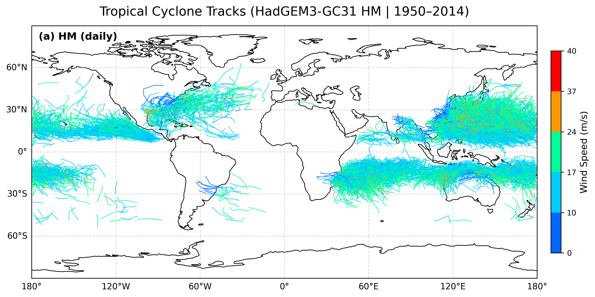

flowchart LR
subgraph User
I[(Input data)]
P[Tracker parameters]
end
I --> T[TCTrack]
P --> T
T --> A[External tracking algorithm]
A --> T
T --> O[(Output data)]
TCTrack: Working with researchers to enable FAIR tropical cyclone tracking
Sam Avis
Jack Atkinson
Simon Sadler
Surbhi Goel
Charles Powell
Alison Ming
2026-09-10
The starting problem
Topic: Identifying tropical cyclone tracks from gridded data (simulations, forecasts, historical reanalysis data)
Problem:
- Multiple tracking algorithms exist, but give different results.
- We want a code that implements them with a unified interface.

Applying RSE expertise - Don’t reinvent the wheel
Initial plan: Reimplement tracking algorithms in Python - researchers did not have full knowledge of existing domain software.
Also, existing codes were not necessarily well documented / work on all systems.
New plan: Understand and build on what is already there to improve code sustainability - RSE expertise needed.
Applying RSE expertise - The framework
- TCTrack only needs an interface and parameters for each tracking algorithm.
- Easily extensible to encourage community contributions.
Building domain experience
To wrap the tracking algorithms, we had to gain an understanding of them rather than treating them as black boxes.
We were able to identify themes across algorithms.
e.g. Broadly 3 main steps:
flowchart LR
A[Preprocessing] --> B[Detection]
B --> C[Stitching]
Building domain experience
We want to expose as many parameters and functionality from the underlying code as possible.
detect_params = te.TEDetectParameters(
search_by_min="msl",
time_filter="6hr",
merge_dist=6.0,
closed_contours=[
te.TEContour(var="msl", delta=200.0, dist=5.5),
te.TEContour(var="_DIFF(zg(300hPa),zg(500hPa))", delta=-6.0, dist=6.5, minmaxdist=1.0),
],
output_commands=[
te.TEOutputCommand(var="msl", operator="min"),
te.TEOutputCommand(var="orog", operator="max"),
te.TEOutputCommand(var="si10", operator="max", dist=2.0),
],
)
stitch_params = te.TEStitchParameters(
caltype="360_day",
max_sep=8.0,
min_time="54h",
max_gap="24h",
min_endpoint_dist=8.0,
threshold_filters=[
te.TEThreshold(var="latitude", op="<=", value=50, count=10),
te.TEThreshold(var="latitude", op=">=", value=-50, count=10),
te.TEThreshold(var="orog", op="<=", value=150, count=10),
te.TEThreshold(var="si10", op=">=", value=10, count=10),
],
)Equally, we want to keep it simple to use - e.g. default parameter sets.
To do this we need a good understanding of how the codes work and how the algorithms are used in research.
FAIR outputs: the problem
start 2 1950 1 4 0
54.67 -22.15 16.65 999.23 0.00027446 1950 1 4 0
55.72 -24.49 17.38 997.83 0.00031078 1950 1 5 0
start 13 1950 1 6 0
67.32 -9.26 17.90 1002.11 0.00065708 1950 1 6 0
67.68 -9.26 15.32 1003.88 0.00044106 1950 1 7 0
...track_id, year, month, day, hour, i, j, lon, lat, psl, orog, sfcWind
0, 1950, 1, 1, 6, 572, 320, 201.269531, -14.882813, 1.003118e+05, 0.000000e+00, 1.389075e+01
0, 1950, 1, 1, 12, 569, 318, 200.214844, -15.351562, 1.001075e+05, 0.000000e+00, 1.546506e+01
0, 1950, 1, 1, 18, 567, 317, 199.511719, -15.585937, 1.001445e+05, 0.000000e+00, 1.590697e+01
0, 1950, 1, 2, 0, 565, 320, 198.808594, -14.882813, 1.000154e+05, 0.000000e+00, 1.531368e+01
...netcdf ff_trs.test_out {
dimensions:
tracks = 703 ;
record = UNLIMITED ; // (78 currently)
variables:
int TRACK_ID(tracks) ;
TRACK_ID:add_fld_num = 0 ;
TRACK_ID:tot_add_fld_num = 0 ;
TRACK_ID:loc_flags = "" ;
int FIRST_PT(tracks) ;
int NUM_PTS(tracks) ;
int index(record) ;
int time(record) ;
float longitude(record) ;
float latitude(record) ;
float intensity(record) ;
}- Different format for every algorithm
- Unclear what each value represents
- Limited metadata
- Cannot reproduce
FAIR outputs: standardised format
All TCTrack outputs are converted into CF-Compliant NetCDF.
Again build on existing software by heavily relying on cf-python (Thanks to the NCAS RSE team!)
netcdf my_tracks {
dimensions:
trajectory = 36 ;
observation = 60 ;
variables:
int64 trajectory(trajectory) ;
trajectory:standard_name = "trajectory" ;
trajectory:cf_role = "trajectory_id" ;
trajectory:long_name = "trajectory index" ;
int64 observation(observation) ;
observation:standard_name = "observation" ;
observation:long_name = "observation index" ;
double time(trajectory, observation) ;
time:standard_name = "time" ;
time:long_name = "time" ;
time:units = "days since 1970-01-01" ;
time:calendar = "360_day" ;
double lat(trajectory, observation) ;
lat:standard_name = "lat" ;
lat:long_name = "latitude" ;
lat:units = "degrees_north" ;
double lon(trajectory, observation) ;
lon:standard_name = "lon" ;
lon:long_name = "longitude" ;
lon:units = "degrees_east" ;
double grid_i(trajectory, observation) ;
grid_i:long_name = "longitudinal grid index" ;
grid_i:coordinates = "time lat lon" ;
double grid_j(trajectory, observation) ;
grid_j:long_name = "latitudinal grid index" ;
grid_j:coordinates = "time lat lon" ;
double air_pressure_at_sea_level(trajectory, observation) ;
air_pressure_at_sea_level:standard_name = "air_pressure_at_sea_level" ;
air_pressure_at_sea_level:long_name = "Sea Level Pressure" ;
air_pressure_at_sea_level:units = "Pa" ;
air_pressure_at_sea_level:coordinates = "time lat lon" ;
air_pressure_at_sea_level:cell_methods = "area: point" ;
double surface_altitude(trajectory, observation) ;
surface_altitude:standard_name = "surface_altitude" ;
surface_altitude:long_name = "Surface Altitude" ;
surface_altitude:units = "m" ;
surface_altitude:coordinates = "time lat lon" ;
surface_altitude:cell_methods = "area: point" ;
double wind_speed(trajectory, observation) ;
wind_speed:standard_name = "wind_speed" ;
wind_speed:long_name = "Near-Surface Wind Speed" ;
wind_speed:units = "m s-1" ;
wind_speed:coordinates = "time lat lon" ;
wind_speed:cell_methods = "area: maximum (great circle of radius 2.0 degrees)" ;
// global attributes:
:Conventions = "CF-1.12" ;
:featureType = "trajectory" ;
:tctrack_version = "0.3" ;
:tctrack_tracker = "TETracker" ;
:detect_nodes_parameters = "{\"in_data\": [\"psl_data.nc\", \"zg_data.nc\", \"orog_data.nc\", \"sfcWind_data.nc\"], \"out_header\": true, \"output_file\": \"nodes_out.dat\", \"search_by_min\": \"psl\", \"search_by_max\": null, \"closed_contours\": [{\"var\": \"psl\", \"delta\": 200.0, \"dist\": 5.5, \"minmaxdist\": 0.0}, {\"var\": \"zgdiff\", \"delta\": -6.0, \"dist\": 6.5, \"minmaxdist\": 1.0}], \"merge_dist\": 6.0, \"time_filter\": \"6hr\", \"lat_name\": \"lat\", \"lon_name\": \"lon\", \"min_lat\": 0.0, \"max_lat\": 0.0, \"min_lon\": 0.0, \"max_lon\": 0.0, \"regional\": false, \"output_commands\": [{\"var\": \"psl\", \"operator\": \"min\", \"dist\": 0.0}, {\"var\": \"orog\", \"operator\": \"max\", \"dist\": 0.0}, {\"var\": \"sfcWind\", \"operator\": \"max\", \"dist\": 2.0}]}" ;
:stitch_nodes_parameters = "{\"output_file\": \"tracks_out.txt\", \"in_file\": \"nodes_out.dat\", \"in_list\": null, \"in_fmt\": [\"lon\", \"lat\", \"psl\", \"orog\", \"sfcWind\"], \"allow_repeated_times\": false, \"caltype\": \"360_day\", \"time_begin\": null, \"time_end\": null, \"max_sep\": 8.0, \"max_gap\": \"24h\", \"min_time\": \"54h\", \"min_endpoint_dist\": 8.0, \"min_path_dist\": 0, \"threshold_filters\": [{\"var\": \"lat\", \"op\": \"<=\", \"value\": 50, \"count\": 10}, {\"var\": \"lat\", \"op\": \">=\", \"value\": -50, \"count\": 10}, {\"var\": \"orog\", \"op\": \"<=\", \"value\": 150, \"count\": 10}, {\"var\": \"sfcWind\", \"op\": \">=\", \"value\": 10, \"count\": 10}], \"prioritize\": null, \"add_velocity\": false, \"out_file_format\": \"gfdl\", \"out_seconds\": false}" ;
}FAIR outputs: metadata
Included metadata:
- Variable metadata (copied from input files)
- TCTrack metadata
- Version
- Tracking algorithm
- Tracking parameters
Solves the familiar problem: “How did we get this result?”
FAIR outputs: reproducibility
The metadata is machine-readable, further simplifying reproduction:
Conclusions
- RSE support helped to create a more useful software for the community.
- Domain knowledge helped us improve ease of use for researchers’ workflows.
- FAIR outputs improve the usability of research outputs.